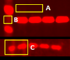

General Background Subtraction Concepts
Background is noise in an image that can affect signal quantification. Background must be subtracted to accurately calculate signal from the shape(s) of interest, especially if background values vary throughout an image. The best method for background correction depends on the image and its background consistency.
Image Studio Software provides a variety of background subtraction methods to address numerous conditions found in wide ranging biological imaging applications.
Background consistency in an image will generally fall into one of three categories:
-
Background around shapes in an image can be nearly uniform
-
Background around shapes can be different around each shape
-
Background around shapes in a lane can vary within the lane

Many forms of background can be seen in these images. A) Brightness from the autofluorescent background is fairly constant. B) Smearing between bands in a marker lane. C) Different background around shapes.
{kind=link}
Image Studio Software provides these background correction methods to accurately calculate background for each of the three scenarios above:
- User-Defined: If background varies little throughout an image, one or more shapes can be placed on the background of the image and assigned to represent background for each shape. For add-on Plate or Grid analysis types (available with the Grid Analysis Key), wells or spots can be assigned as user-defined background shapes.
- Average or Median: If background varies widely between shapes, Average or Median can be used to subtract background around each shape.
- Lane (available with the Western, MPX™ Western, and DNA Gel analysis types): The Image Studio Lane method corrects for background in lanes with many close together bands and lanes with smearing between bands.
NOTE: Background subtraction in Image Studio Software does not affect the appearance of an image. See the Display Panel topic in the Image Studio Software Help for how to adjust image display.